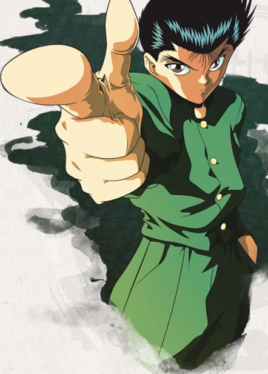

Every game is a new roll. No two boards alike. Free forever.
FREE • NO SIGN-UP • PC + MOBILE
Pick a mode
Two modes. That's it. The dice decide the rest.
How RNG Chess works
Win by killing kings. If a side has several kings, all of them must be captured. Capturing one just thins the herd.
No king at the start = instant loss. With default settings, each side with pieces has a 5% chance of rolling zero kings. One king is the most common result.
Opening rolls protect kings. A board is re-rolled if any king starts in check or if both sides have kings and White has no move. If a first move can put a king in check, the board is re-rolled 90% of the time.
Normal chess moves otherwise. Pawns, knights, bishops, rooks, queens and kings all move the usual way. Pawns promote on the last rank (you pick). En passant works. There is no castling — with random pieces it would be chaos.
Kings are captured like any other piece. If your king is attacked and you don't save it, it dies — you lose only when your last king falls. There is no checkmate.
Only the last king matters: the game ends only when a side loses its last king. If a side has no moves at all, that's stalemate — a draw. Repetition and the 50-move rule are draws too.
White moves first. The room creator plays White (colours swap on rematch).
Moves always arrive. Every move sends the full board, the other side confirms it, and both sides compare notes every few seconds — if a move ever gets lost, the boards repair themselves.
Advanced settings
White to move
Room
Local game
Captured
♔ White took: —
♚ Black took: —
Moves
No moves yet — the dice have spoken, now you move.
Promote your pawn
Pick a piece. (The dice are watching.)
White wins
Xabinski!

Piece
Previous
New
You cannot predict the random
Expected shares for , including starting pawn promotions, before opening re-rolls.